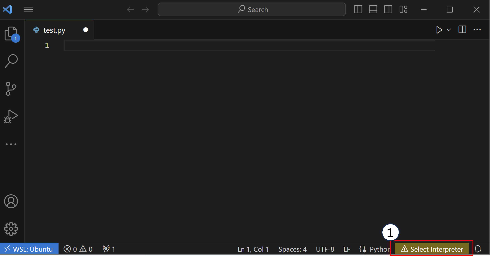

Computer Set Up#
Completing this tutorial requires installing software and setting up a Python environment. If you are doing any kind of code development and are on Windows, we recommend installing the Windows Subsytem for Linux.
Windows users take note
If you are working on a Windows computer, participation in this workshop will require you to install the Windows Subsystem for Linux (WSL). You should install WSL 2, you will need to have the Windows 10 or Windows 11 OS with the following version requirements:
For x64 systems: Version 1903 or higher, with Build 18362 or higher.
For ARM64 systems: Version 2004 or higher, with Build 19041 or higher.
If you haven’t updated your computer in a while, these updates could take a considerable amount of time. Plan accordingly!
If you are on Windows 11, you can also set up WSL to be able to use graphical interfaces.
As an alternative to WSL, or in addition to it, you can setup and use a Docker container to follow along with the workshop.
Please follow the instructions given here to make sure you have the necessary software installed. We will be using Python and the conda package manager. If you are on MacOS, Linux, or WSL and you already have Anaconda (or Miniconda) installed, skip to the environment creation portion of these set-up instructions. If you do not have Anaconda or Miniconda installed please see the appropriate section below. Note If you are on Windows Miniconda has to be installed on WSL (not Windows). This might be a separate installation.
Anaconda vs. Minconda
Anaconda is a distribution of Python, the conda package manager, and several third-party libraries that are commonly used in data science. Miniconda contains only Python and the conda package manager. You will be able to install any package you would like later using Miniconda. Miniconda will take up a lot less space on your computer. We will be learning to manage conda environments and install the packages we need, so we consider Miniconda to be the better option between the two. If you already have Anaconda installed, however, there is no need to install Miniconda.
Ensure that your conda version is up-to-date
If you already have conda installed using Anaconda or Miniconda,
you should make sure your conda version is up-to-date.
Ensuring you have an up-to-date version of conda will ensure that you are more easily able to install the packages we will be using in this workshop.
conda update -n base conda
Installing WSL (Windows users only)#
If your computer uses the Windows operating system, we require installing Windows Subsystem for Linux (WSL). Follow the installation instructions at this link. If you don’t have a preference for Linux distribution, we recommend installing Ubuntu 22.04.
Once WSL is installed, open your ‘Start’ menu and choose ‘Ubuntu’. This will open a terminal window. A terminal is an interface you can use to interact with your computer using text. The first time you open Ubuntu, you may see a message which says “Installing, this may take a few minutes…”. After the installation is done, you will have to create a username and password. After these are created, you should be able to use the terminal.
The Windows Subsystem for Linux is like running another computer inside your computer. It is a different operating system with different software installed than your Windows computer. For the WSL, you have to install Miniconda from the terminal in your Linux operating system. Note that if you are using the WSL, your Linux OS is completely separated from your Windows operating system. This means that software installed on one operating system is not available on the other. If you are running the Windows 11 operating system, you can set up WSL to use graphical interfaces on your computer. Otherwise, you will only be able to interact with WSL through the terminal (and the text editor VSCode, see later in the set-up for information on how to use VS Code in WSL).
Miniconda Installation#
You can install Miniconda through a graphical interface or using your terminal. Pick either “Graphical Installation” or “Text-based (terminal) Installation”. If you are using WSL, it may be easiest to complete this using the terminal installation.
Graphical Installation#
Obtain the latest version of Miniconda for your OS at this link. This will download an installer you can run to install Miniconda on your system. Note that if you are using WSL, you will need the Linux installer, and you will have to move this file to WSL before running.
Text-based (terminal) Installation#
You can also use the terminal to download and install the Miniconda compilers using the terminal. If you are using Linux or WSL, type the following into your terminal.
curl -O https://repo.anaconda.com/miniconda/Miniconda3-latest-Linux-x86_64.sh
bash Miniconda3-latest-Linux-x86_64.sh
If you are using a Mac, you should pick the appropriate link for your architecture from the Miniconda installer page.
M1: https://repo.anaconda.com/miniconda/Miniconda3-latest-MacOSX-arm64.sh
x86: https://repo.anaconda.com/miniconda/Miniconda3-latest-MacOSX-x86_64.sh
After installation,
close and reopen your terminal window.
If you do not see (base) before your username on the command line, type
conda init
Make Lesson Environment#
We are utilizing two Molecular Dynamics packages to show examples of some of the design patterns. MDanalysis and MDTraj are both available through conda-forge.
To start, open an Anaconda prompt. Then enter
conda create --name design_patterns "python=3.11"
Enter Y to continue.
We now need to activate our new environment.
conda activate design_patterns
Then we will install MDAnalysis and MDTraj.
conda install -c conda-forge mdanalysis mdtraj numpy
Downloading Workshop Materials#
We have included a sample trajectory file to use with the example design patterns. The provided trajectory was extracted from the MDAnalysisTests
Text Editor#
Everyone should have a text editor they can use to edit code. If you do not have a preference for text editors, we recommend Visual Studio Code. If you are using WSL, see these instructions for installing Visual Studio Code for use with WSL. If you are using Mac, follow these instructions to set-up VS Code so that you can use it from the command line.
Remote Development Extension (for WSL or ssh)
The Remote Development Extension will allow you to connect to remote machines (like an HPC system) and use VS Code as if it were running on your local machine. This can be very useful for computational scientists.
Note that if you are using WSL, you will have to install this extension to use VS Code with WSL. This is in the above linked instructions.
When using VSCode with the Python extension, you will want to have it use the correct Python version and installation for analyzing your code.
You will want it to use the Python installation and packages that are installed in the design_patterns environment you created earlier.
To set the Python interpreter for VSCode, first open a Python file using the editor.
In order to change the Python interpreter, you will need to have a Python file open.
Open a Python file called test.py by typing
code test.py
Once you have an editor open, you can click the button on the bottom of VSCode, shown in the screenshot below as (1) (this could also say a Python version like “3.10”). Alternatively, you can open the command palette (Ctrl+Shift+P on Windows/Linux, Cmd+Shift+P on Mac) and type “Python: Select Interpreter”.
After you have clicked the button, you will see a list of Python interpreters that VSCode can use.
You will want to choose the one that is in your design_patterns environment.
You should do this for every Python file or project that you open in VSCode. Once you have correctly set your Python environment, VSCode can analyze your code as you write it. VSCode will be able to check that certain libraries are installed in your environment or that functions are being called correctly.